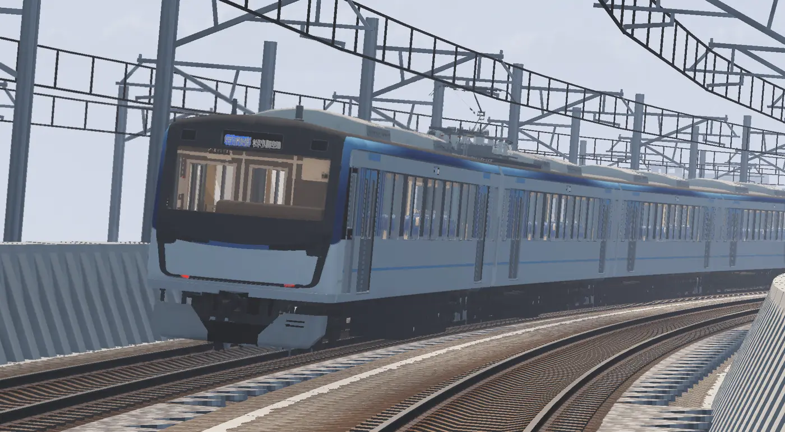

光瀨都市鉄道
乘車
Ride
時刻表・票價
Timetable / Fares
設備與服務介紹
Facilities & Services
高速鉄道
High-Speed Rail
NEW
特急こばな
Ltd. Exp. Kobana
出行
Explore
沿線景點與車站介紹
Sights & Stations
乘車指南・FAQ
Guide / FAQ
機場聯外交通
Airport
線上訂票
Booking
即時列車動態
Train Locator
企業管理登入
Staff Login (ATOS)
乘車總覽
Top
時刻表・票價
Timetable / Fares
設備與服務介紹
Facilities & Services
高速鉄道
High-Speed Rail
NEW
特急こばな
Ltd. Exp. Kobana

RIDE
乘車
時刻表、票價、各列車種別與高速鉄道——光瀨都市鉄道的所有搭乘資訊都在這裡。
首頁
＞ 乘車
乘車
Ride
時刻表・票價
車站時刻表、乘車・轉乘查詢、票價查詢、路線圖
設備與服務介紹
各種別的車型、停靠站、所要時間與全日時刻表
万瀨高速鉄道
2026.11.16 開通；一日往返、路線圖、轉乘方式與車輛介紹
特急こばな
勝守、天鳥崎、本磯島 一車直達；新 8000 形車輛介紹